Word Embeddings
When you’re dealing with words in text, you end up with tens of thousands of word classes to analyze; one for each word in a vocabulary. Trying to one-hot encode these words is massively inefficient because most values in a one-hot vector will be set to zero. So, the matrix multiplication that happens in between a one-hot input vector and a first, hidden layer will result in mostly zero-valued hidden outputs.
To solve this problem and greatly increase the efficiency of our networks, we use what are called embeddings. Embeddings are just a fully connected layer like you’ve seen before. We call this layer the embedding layer and the weights are embedding weights. We skip the multiplication into the embedding layer by instead directly grabbing the hidden layer values from the weight matrix. We can do this because the multiplication of a one-hot encoded vector with a matrix returns the row of the matrix corresponding the index of the “on” input unit.
BOW and TF-IDF are spare representation of Tokens. In contrast Embedding refer to dense vector representations of Tokens in a continuous vector space. These embeddings are used to represent words or other linguistic units in a way that captures semantic relationships and contextual information.
Embeddings are a fundamental component of many NLP applications, enabling models to understand and work with textual data in a way that captures semantic information and relationships between words. They have revolutionized the field of NLP and have significantly improved the performance of various NLP tasks.
1. Word2Vec
2. Glove
3. FastText
4. ELMO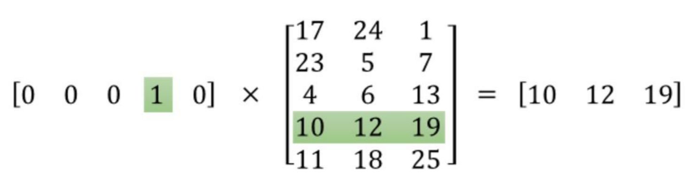
Instead of doing the matrix multiplication, we use the weight matrix as a lookup table. We encode the words as integers, for example “heart” is encoded as 958, “mind” as 18094. Then to get hidden layer values for “heart”, you just take the 958th row of the embedding matrix. This process is called an embedding lookup and the number of hidden units is the embedding dimension.
There is nothing magical going on here. The embedding lookup table is just a weight matrix. The embedding layer is just a hidden layer. The lookup is just a shortcut for the matrix multiplication. The lookup table is trained just like any weight matrix.
Embeddings aren’t only used for words of course. You can use them for any model where you have a massive number of classes. A particular type of model called Word2Vec uses the embedding layer to find vector representations of words that contain semantic meaning.
Word2Vec
Word2Vec Efficient Estimation of Word Representations in Vector Space
Word2Vec is one of the most popular technique to learn word embeddings using shallow neural network.
We’re going to train a simple neural network with a single hidden layer to perform a certain task, but then we’re not actually going to use that neural network for the task we trained it on! Instead, the goal is actually just to learn the weights of the hidden layer–we’ll see that these weights are actually the “word vectors” that we’re trying to learn.
Different model architectures that can be used with Word2Vec
- CBOW Neural Network Model
- Skipgram Neural Network Model

Different ways to train Word2vec Model: 1. Heirarchial Softmax 2. Negative Sampling
Skipgram
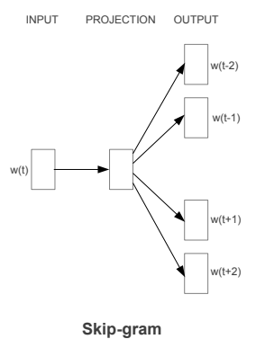
eg: The quick brown fox jumps over the lazy dog 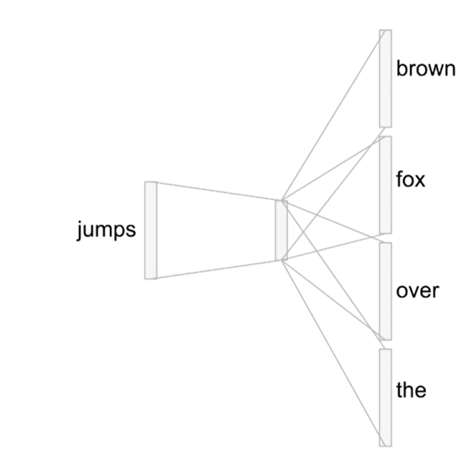
We’re going to train the neural network to do the following. Given a specific word in the middle of a sentence (the input word), look at the words nearby and pick one at random. The network is going to tell us the probability for every word in our vocabulary of being the “nearby word” that we chose.
nearby - there is actually a “window size” parameter to the algorithm. A typical window size might be 5, meaning 5 words behind and 5 words ahead (10 in total).
We’ll train the neural network to do this by feeding it word pairs found in our training documents. The network is going to learn the statistics from the number of times each pairing shows up. So, for example, the network is probably going to get many more training samples of (“Soviet”, “Union”) than it is of (“Soviet”, “Sasquatch”). When the training is finished, if you give it the word “Soviet” as input, then it will output a much higher probability for “Union” or “Russia” than it will for “Sasquatch”.
Skipgram Model Details
Skipgram architecture consists of: 1. Embedding layer / Hidden Layer
An Embedding layer takes in a number of inputs, importantly: * num_embeddings – the size of the dictionary of embeddings, or how many rows you’ll want in the embedding weight matrix * embedding_dim – the size of each embedding vector; the embedding dimension.(300 features is what Google used in their published model trained on the Google news dataset (you can download it from here)
- Softmax Output Layer
The output layer will have output neuron (one per word in our vocabulary) will produce an output between 0 and 1, and the sum of all these output values will add up to 1.

Working 1. The input words are passed in as batches of input word tokens. 2. This will go into a hidden layer of linear units (our embedding layer). 3. Then, finally into a softmax output layer. We’ll use the softmax layer to make a prediction about the context words by sampling, as usual.
Training Word2Vec Model
Word2Vec network is a huge network in terms of parameters. Say we had word vectors with 300 components, and a vocabulary of 10,000 words. Recall that the neural network had two weight matrices–a hidden layer and output layer. Both of these layers would have a weight matrix with 300 x 10,000 = 3 million weights each!
Hence to reduce compute burden of the training process,the research paper proposed following two innovations: 1. Subsampling frequent words to decrease the number of training examples. 2. Modifying the optimization objective with a technique they called Negative Sampling,instead of normal cross entropy which causes each training sample to update only a small percentage of the model’s weights which makes training the network very inefficient.
Subsampling
Words that show up often such as “the”, “of”, and “for” don’t provide much context to the nearby words. If we discard some of them, we can remove some of the noise from our data and in return get faster training and better representations. This process is called subsampling by Mikolov. For each word \(w_i\) in the training set, we’ll discard it with probability given by
\[ P(w_i) = 1 - \sqrt{\frac{t}{f(w_i)}} \]
where \(t\) is a threshold parameter and \(f(w_i)\) is the frequency of word \(w_i\) in the total dataset.
Negative Sampling
As discussed above,the the skip-gram neural network has a tremendous number of weights, all of which would be updated slightly by every one of our millions or billions of training samples!
Negative sampling addresses this by having each training sample only modify a small percentage of the weights, rather than all of them.
With negative sampling, we are instead going to randomly select just a small number of “negative” words (let’s say 5) to update the weights for. (In this context, a “negative” word is one for which we want the network to output a 0 for). We will also still update the weights for our “positive” word (which is the word “quick” in our current example).
The paper says that selecting 5-20 words works well for smaller datasets, and you can get away with only 2-5 words for large datasets.
Selecting Negative Samples
The “negative samples” (that is, the 5 output words that we’ll train to output 0) are selected using a “unigram distribution”, where more frequent words are more likely to be selected as negative samples.
Modification in Cost Function
We change the loss function to only care about correct example and a small amount of wrong examples.
First part of the Loss function: we take the log-sigmoid of the inner product of the output word vector and the input word vector.
Second part of the Loss function:
let’s first look at
\[\large \sum_i^N \mathbb{E}_{w_i \sim P_n(w)}\]
This means we’re going to take a sum over words \(w_i\) drawn from a noise distribution \(w_i \sim P_n(w)\). The noise distribution is basically our vocabulary of words that aren’t in the context of our input word. In effect, we can randomly sample words from our vocabulary to get these words. \(P_n(w)\) is an arbitrary probability distribution though, which means we get to decide how to weight the words that we’re sampling. This could be a uniform distribution, where we sample all words with equal probability. Or it could be according to the frequency that each word shows up in our text corpus, the unigram distribution \(U(w)\). The authors found the best distribution to be \(U(w)^{3/4}\), empirically. The power makes less frequent words be sampled more often
Finally, in
\[\large \log{\sigma\left(-u_{w_i}\hspace{0.001em}^\top v_{w_I}\right)},\]
we take the log-sigmoid of the negated inner product of a noise vector with the input vector.
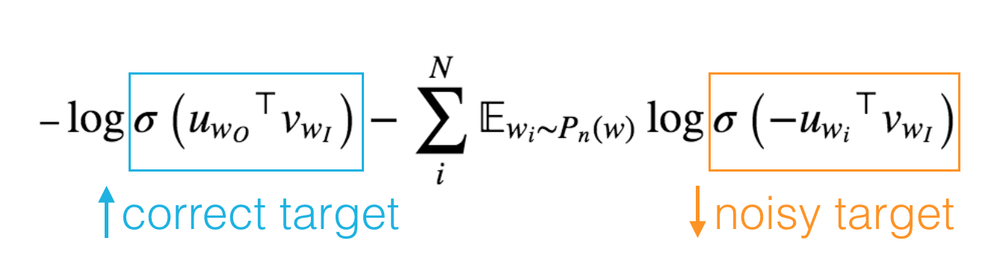
To give you an intuition for what we’re doing here, remember that the sigmoid function returns a probability between 0 and 1. The first term in the loss pushes the probability that our network will predict the correct word \(w_O\) towards 1. In the second term, since we are negating the sigmoid input, we’re pushing the probabilities of the noise words towards 0.
Global Vector for Word Representation(GloVe)
Motivation
The Word2Vec -context window-based methods suffer from the disadvantage of not learning from the global corpus statistics. As a result, repetition and large-scale patterns may not be learned as well with these models.
This method combines elements from the two main word embedding models which existed when GloVe was proposed: 1. Count based approach - Global matrix factorization 2. Direct Prediction - Local context window methods
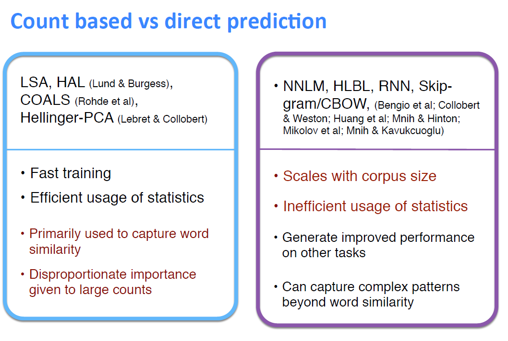
Global Matrix Factorization - Count based approach
It is the process of using matrix factorization methods from linear algebra to perform rank reduction on a large term-frequency matrix. These matrices can be represented as : 1. Term-Document Frequency - rows are words and the columns are documents (or sometimes paragraphs) 2. Term-Term Frequencies - words on both axes and measure co-occurrence
Latent semantic analysis (LSA) It is a technique in natural language processing for analyzing relationships between a set of documents and the terms they contain by applying Global matrix factorization to term-document frequency matrices. In LSA the high-dimensional matrix is reduced via singular value decomposition (SVD).
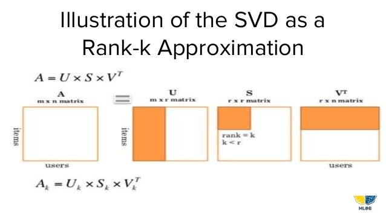
Local Context Window Direct prediction
- Skip-gram model
By passing a window over the corpus line-by-line and learning to predict either the surroundings of a given word
- Continuous Bag of Words Model (CBOW)
Predict a word given its surroundings. Note the bag-of-words problem is often shortened to “CBOW”.
Skip-gram: works well with small amount of the training data, represents well even rare words or phrases.
CBOW: several times faster to train than the skip-gram, slightly better accuracy for the frequent words.
GloVe embedding generation algorithm
GloVe technique improves on these previous methods by making changes in the following:
- Co-occurance Probabilities
Instead of learning the raw co-occurrence probabilities, it may make more sense to learn ratios of these co-occurrence probabilities, which seem to better discriminate subtleties in term-term relevance.
To illustrate this, we borrow an example from their paper: suppose we wish to study the relationship between two words, i = ice and j = steam. We’ll do this by examining the co-occurrence probabilities of these words with various “probe” words.
Co-occurrence probability of an arbitrary word i with an arbitrary word j to be the probability that word j appears in the context of word i. 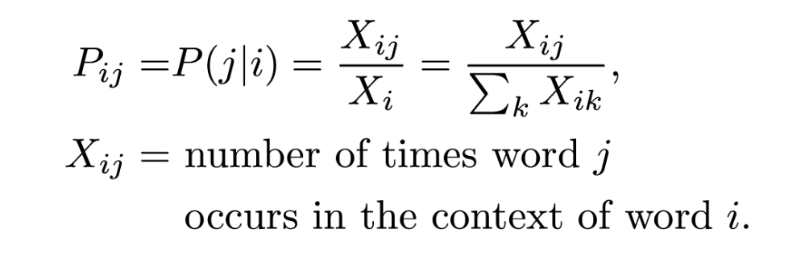 X_i is defined as the number of times any word appears in the context of word i, so it’s defined as the sum over all words k of the number of times word k occurs in the context of word i.
Let us take few probe words and see how does the ratio appears: 1. If we choose a probe word k = solid which is closely related to i = ice but not to j = steam, we expect the ratio P_{ik}/P_{jk} of co-occurrence probabilities to be large 2. If we choose a probe word k = gas we would expect the same ratio to be small, since steam is more closely related to gas than ice is. 3. If we choose a probe word k = water , which are closely related to both ice and steam, but not more to one than the other ,we expect our ratio to be close to 1 since there shouldn’t be any bias to one of ice or steam 4. If we choose a probe word k = fashion ,which are not closely related to either of the words in question, we expect our ratio to be close to 1 since there shouldn’t be any bias to one of ice or steam
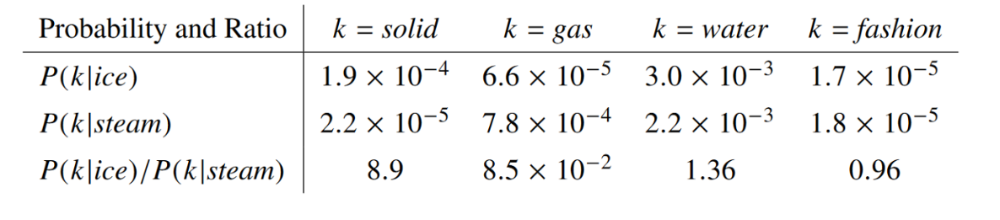
Noting that the ratio Pik /Pjk depends on three words i, j, and k, the most general model takes the form, 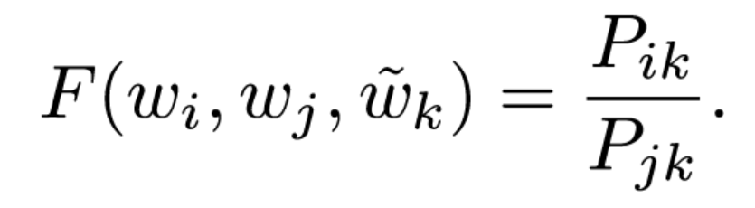
In this equation, the right-hand side is extracted from the corpus, and F may depend on some as-of-yet unspecified parameters. The number of possibilities for F is vast, but by enforcing a few desiderata we can select a unique choice. We have two word vectors which we’d like to discriminate between, and a context word vector which is used to this effect.So to encode information about the ratios between two words, the authors suggest using vector differences as inputs to our function Vector Difference Model 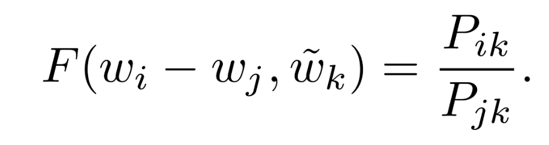
So now,vector difference of the two words i and j we’re comparing as an input instead of both of these words individually, since our output is a ratio between their co-occurrence probabilities with the context word.
Now we have two arguments, the context word vector, and the vector difference of the two words we’re comparing. Since the authors wish to take scalar values to scalar values (note the ratio of probabilities is a scalar), the dot product of these two arguments is taken
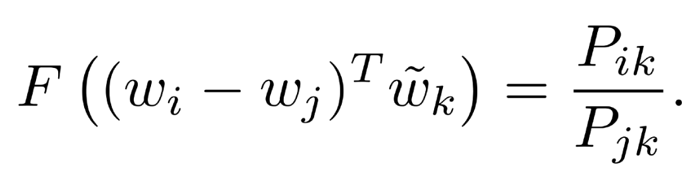
Next, note that for word-word co-occurrence matrices, the distinction between a word and a context word is arbitrary and that we are free to exchange the two roles.Our final model should be invariant under this relabeling, but above equation is not.
After applying Homomorphism condition: 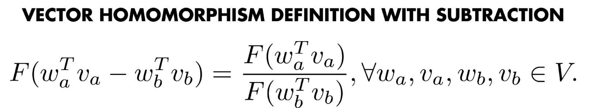
we arrive at the equation as in the paper 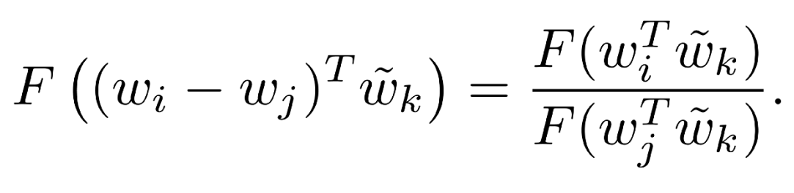
Word Analogies
There is no concept of word analogies with algorithms like word2vec and Glove.They just suddenly emerge out of the model and training process.
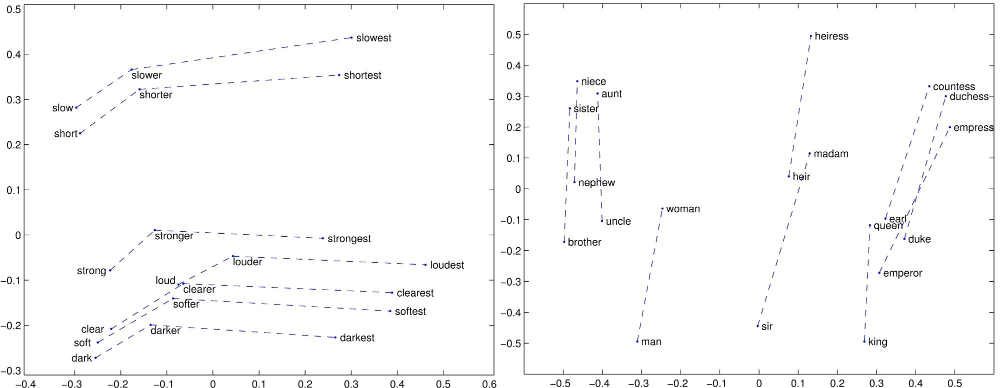
Enriching Word Vectors with Subword Information
Continuous word representations, trained on large unlabeled corpora are useful for many natural language processing tasks. Popular models that learn such representations ignore the morphology of words, by assigning a dis-tinct vector to each word. This is a limitation,especially for languages with large vocabularies and many rare words.
Considering Unigram word model they are higher chances of getting rare words during testing because we can’t take infinite size corpous which includes all the words.
Here each word is represented as a bag of character n-grams. A vector representation of each character n-gram is summed to get word vector.
By representing each word as a bag of character n-grams a SkipGram model with Negative sampling is trained.
By using a distinct vector representation for each word, the skipgram model ignores the internal structure of words.
Hence Fasttext comes with the approach of incorporating sub-word level information.
So breaking a token -> “characteristics” into 3 token -> char_, acter_, istics_
and to make it even better they incorporate n-grams with the actual tokens in text. This adds more feature regarding the local context of how the words are used together.
More specifically they have used bi-gram.
For example:-
text = I love my country
bi-gram feature = "I" , "love" , "my", "country" , "I love" , "love my" , "my country"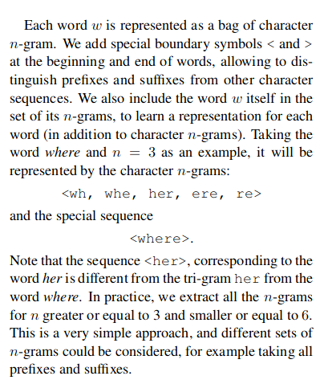 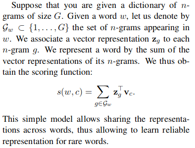
Hyperparameter choice for generating Fasttext embeddings
- Generating fasttext embedding will take more time compared to word2vec model.
- As the corpus size grows, the memory requirement grows too - the number of ngrams that get hashed into the same ngram bucket would grow. So the choice of hyperparameter controlling the total hash buckets including the n-gram min and max size have a bearing.
This N-gram feature was used to generate embeddings which then fasttext used to perform text classification which gave them phenomenal results.
Model Architecture
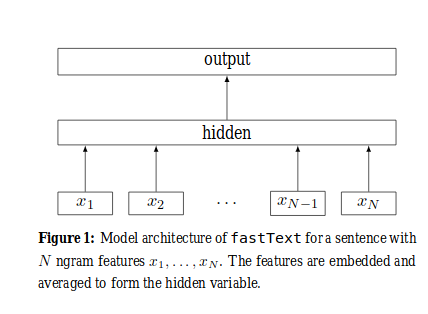
All the input tokens for a document are passed to an Embedding layer after which they are averaged out to generate an embedding for the sentence. The Sentence embeddings is passed to a Fully Connected Softmax layer for classification.
When the number of classes is large, computing the linear classifier is computationally expensive. Moreprecisely, the computational complexity is O(kh) where k is the number of classes and h the dimension of the text representation. In order to improve the running time, Hierarchical softmax is used droping the the computational complexity O(hlog2(k)).
Normal Softmax 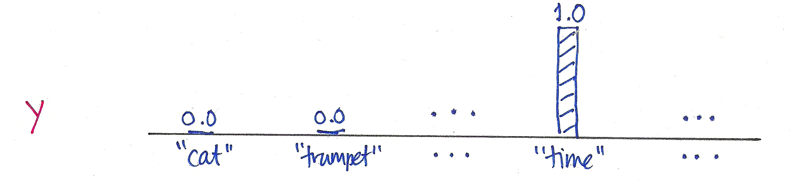
Hierarchical Softmax 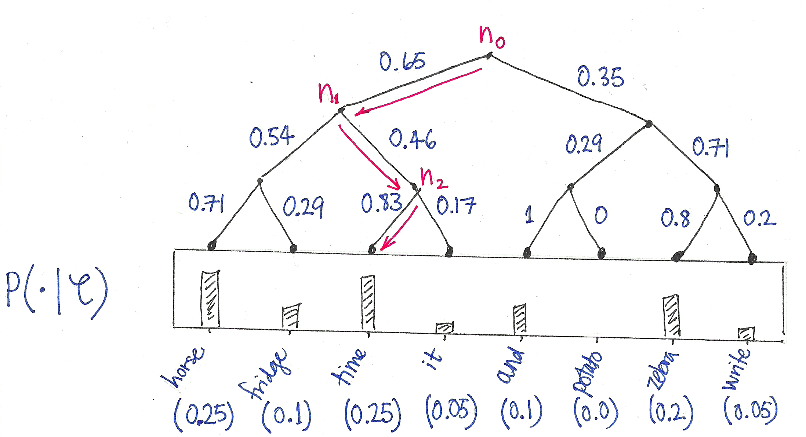
In Hierarchical softmax the task is to form tree.
Good Tree 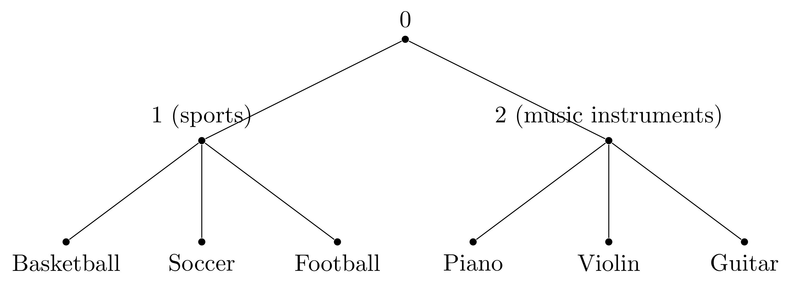
Bad Tree 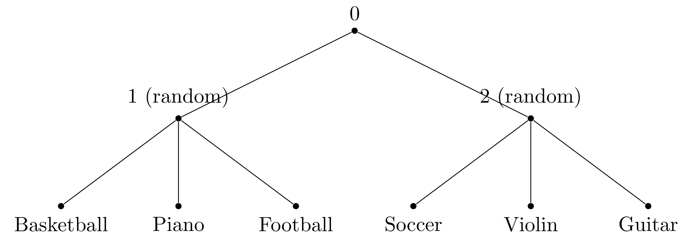
Hierarchical softmax is not an approximate optimization algorithm. It accelerates the optimization by adding human orchestrations which could be highly biased.
ELMo (Embeddings from Language Model)
The point where word2vec, Glove and fasttext failed is, The meaning, semantics of a words changes with respect to the words it is surrounded by in a sentence and these models wheren’t able to represent that.
For example:- ” 1. Apple is in profit. 2. Apple is tasty.
Apple in first sentence refers to the company whereas apple in second sentence refers to fruit.
In word2vec model this one word with two meaning will be represented by same vector.
To solve this issue ELMo uses stacked bi-LSTM to generate embeddings for each words which is context dependent.
so In the above example Apple in first and second case will have two different vector representation.
ELMo is a deep contextualized word representation that models both (1) complex characteristics of word use (e.g., syntax and semantics), and (2) how these uses vary across linguistic contexts (i.e., to model polysemy). These word vectors are learned functions of the internal states of a deep bidirectional language model (biLM), which is pre-trained on a large text corpus. They can be easily added to existing models and significantly improve the state of the art across a broad range of challenging NLP problems, including question answering, textual entailment and sentiment analysis.
ELMo representations are:
* Contextual: The representation for each word depends on the entire context in which it is used.
* Deep: The word representations combine all layers of a deep pre-trained neural network.
* Direction: From both left-to-right and right-to-left directions.Since ELMo embeddings are trained in a unsupervised way. These embeddings can be used for downstream task in supervised way.
Character Aware Language Model
Character-aware language models work at a character level. They model words as sequences of characters and use character-level neural networks, such as convolutional neural networks (CNNs) or recurrent neural networks (RNNs), to generate word embeddings directly from characters.
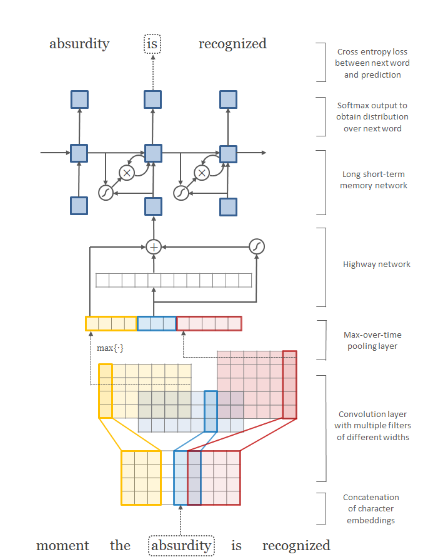 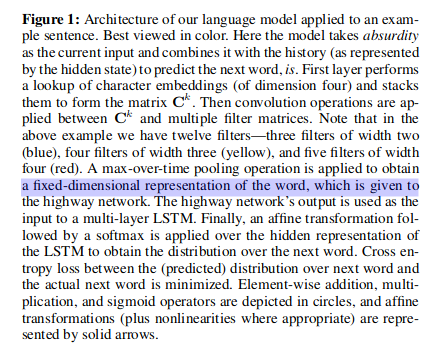
Reference
- Bayes Rule
- Word2Vec from Chris McCormick
- Word Embedding
- Word2Vec
- First Word2Vec paper from Mikolov et al.
- Video: Intuition & Use-Cases of Embeddings in NLP & beyond
- Neural Information Processing Systems, paper with improvements for Word2Vec also from Mikolov et al.
- Skipgram-Pytorch
- Word2Vec-Pytorch
- Glove
- Enriching Word Vectors with Subword Information